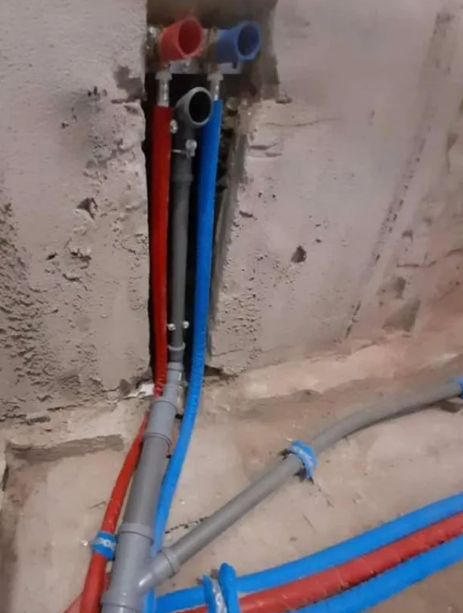
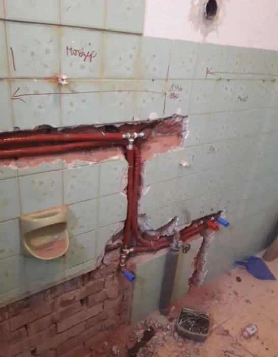
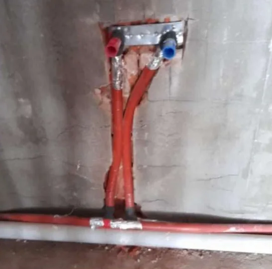
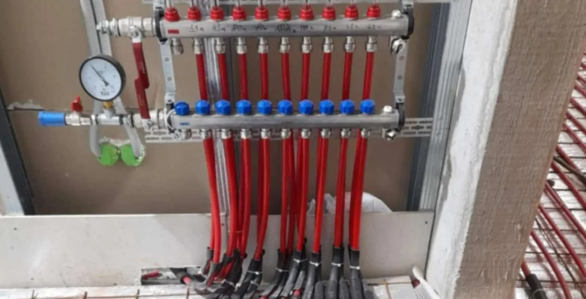
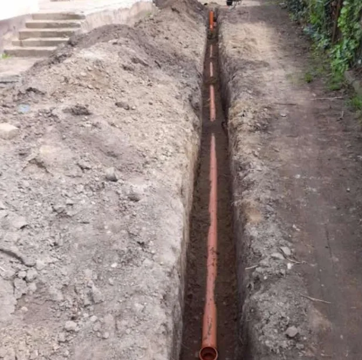
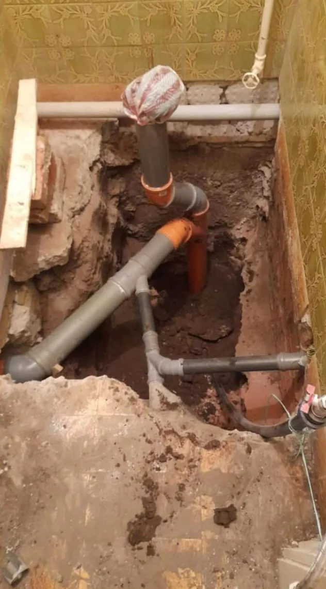

Főoldal / Munkáink
Munkáink
Munkafotók a vállalkozó korábbi weboldaláról. A képaláírások csak azt írják le, ami a fotón látszik; helyszínt és időpontot nem közlünk.
01Vízszerelés






02Fűtés



03Csatornarendszer






Hasonló munka?